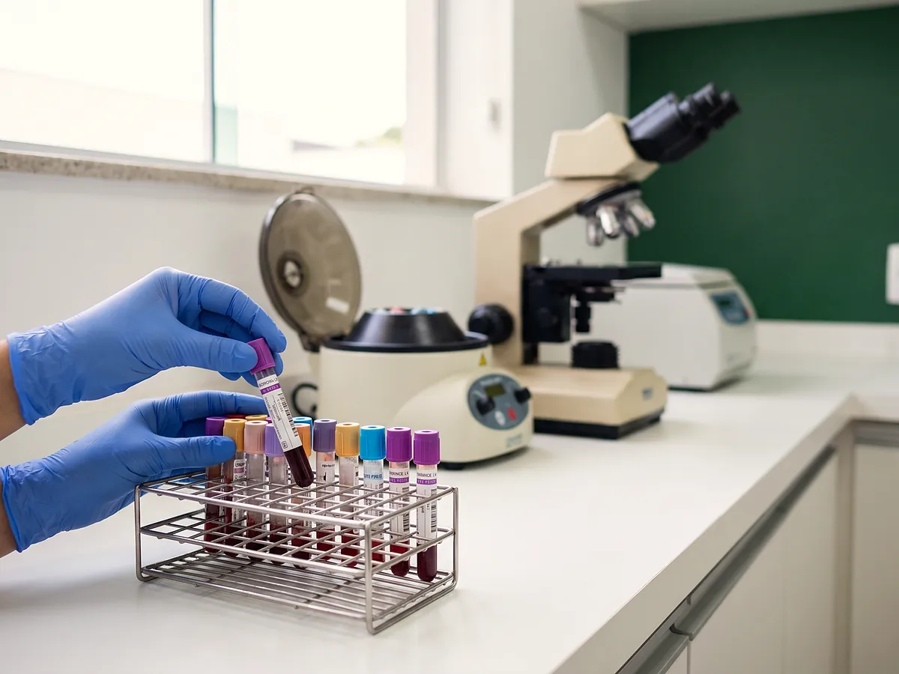

Início · Especialidades e exames
Especialidades, valores e exames
Quem atende cada especialidade, se é pelo convênio ou no particular, e quanto custa. Na dúvida, a equipe confirma tudo pelo WhatsApp antes de você sair de casa.
13 especialidades e terapias
-
Clínica geral
Convênios e particularDr. Diogo Parreira Sarmento e Dra. Jane Blanco Teixeira
-
Pediatria
Convênios e particularDr. Reginei Parreira
-
Geriatria
Convênios e particularDra. Jane Blanco Teixeira
-
Ortopedia
Convênios e particularDr. Luís Eugênio Lacerda de Barros
-
Reumatologia
Convênios e particularDr. Luís Eugênio Lacerda de Barros
-
Ginecologia
ParticularDr. Dinardo Luís de Almeida Triani
-
Dermatologia
ParticularDr. Jorge Wilson de Moraes Bussons
-
Neuropediatria
ParticularDr. Luciano Siqueira
Equipe neurodivergentes -
Nutrologia
ParticularDra. Andrea Bentes de Freitas Rezende
Equipe neurodivergentes -
Nutrição
Convênios e particularAndrea de Almeida Moreira
Equipe neurodivergentes -
Fonoaudiologia
Convênios e particularYára Martins
Equipe neurodivergentes -
Psicologia
Convênios e particularMárcia Andréia Marques Rienti
Equipe neurodivergentes -
Odontologia
ConsulteDr. Igor Fernandes
Ver a página
Não achamos essa especialidade. Chame a equipe pelo WhatsApp que a gente orienta.
Se o seu convênio não estiver na lista, o atendimento é particular, com o valor informado antes de marcar. Quem é do clube UnaMais tem desconto.
Consulta particular a partir de R$ 150
A Unimedic atende pelos convênios Unimed, Cassi, Saúde Caixa, Caberj, Fio Saúde, Fapes, Camperj e Fundaffemg, além do atendimento particular. Ginecologia, dermatologia, neuropediatria e nutrologia atendem só no particular.
Consultas particulares
| Consulta médica particularclínico geral, pediatria, geriatria, ortopedia, reumatologia | R$ 150 |
| Ginecologiacom preventivo, R$ 210 | R$ 150 |
| Dermatologia | R$ 200 |
| Neuropediatria | R$ 350 |
| Nutrologia | R$ 350 |
| Terapiaspsicologia, fonoaudiologia e nutrição | R$ 120 |
Valores informativos, confirmados no agendamento.
Como pagar
Pagamento direto na clínica, no Pix, no cartão ou em dinheiro. Pelo convênio, é só apresentar a carteira do seu plano e o documento. Quem é do clube UnaMais paga menos.
- Unimed
- Cassi
- Saúde Caixa
- Caberj
- Fio Saúde
- Fapes
- Camperj
- Fundaffemg

- Laboratório
- Coleta na clínica
Exames de laboratório na própria clínica
O laboratório de análises clínicas é do mesmo grupo da Unimedic. Com o pedido médico em mãos, você marca a coleta direto pelo WhatsApp e a equipe informa o preparo de cada exame.
- Hemograma e exames de sangue
- Glicose e colesterol
- Exames de urina e fezes
- Tireoide e hormônios
- Exames de rotina e check-up
- Preventivo (na consulta de ginecologia)
Os valores dos exames são informados pela equipe no agendamento, conforme o pedido médico.
Quem é do clube UnaMais tem desconto nos exames.
Dentista no UnaPark Shopping, da limpeza ao implante
A odontologia da Unimedic é conduzida pelo Dr. Igor Fernandes: clínica geral e cirurgia, ortodontia, implantodontia e prótese. Avaliação, orçamento e tratamento no mesmo lugar onde a família já consulta.

Perguntas frequentes
Quanto custa a consulta?
A consulta médica particular custa R$ 150 na maioria das especialidades (clínico geral, pediatria, geriatria, ortopedia, reumatologia e ginecologia; com preventivo, R$ 210). Dermatologia, R$ 200. Neuropediatria e nutrologia, R$ 350. Terapias com psicóloga, fonoaudióloga ou nutricionista, R$ 120. Os valores são confirmados no agendamento.
A Unimedic aceita convênio?
Sim. Atendemos Unimed, Cassi, Saúde Caixa, Caberj, Fio Saúde, Fapes, Camperj e Fundaffemg. Ginecologia, dermatologia, neuropediatria e nutrologia atendem só no particular. Se o seu convênio não estiver na lista, o atendimento é particular, e o clube UnaMais dá desconto.
O UnaMais é plano de saúde?
Não. O UnaMais é um clube de benefícios em saúde: com uma mensalidade, o titular e até 3 dependentes têm desconto nas consultas e nos exames da Unimedic, telemedicina 24 horas e uma consulta com clínico geral por ano. Não cobre internação, urgência nem procedimentos.
Como eu marco?
Pelo WhatsApp (22) 99980-0123. Diga a especialidade, se vai pelo convênio ou no particular e o melhor dia para você. A equipe confirma o horário e manda o endereço.
Onde fica a clínica?
No UnaPark Shopping, Av. Independência, s/n, Bloco 01, Sala 01, em Unamar (Tamoios), Cabo Frio. Tem estacionamento no shopping.
Qual é o horário de atendimento?
De segunda a sexta, das 8h às 18h.